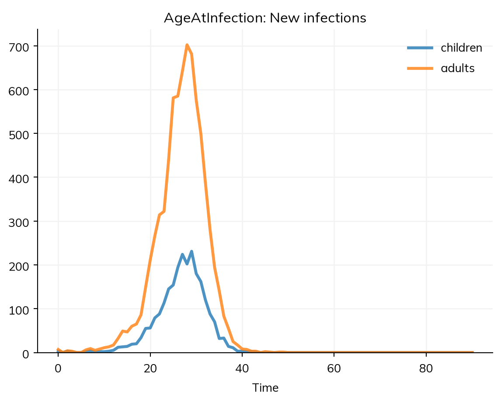
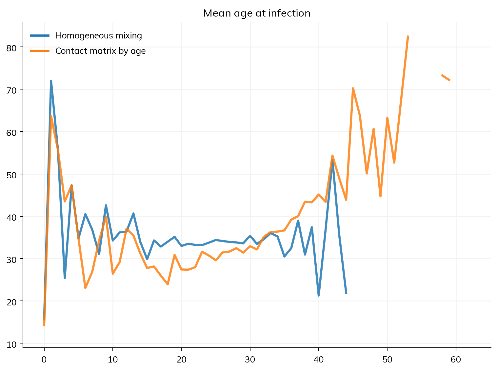
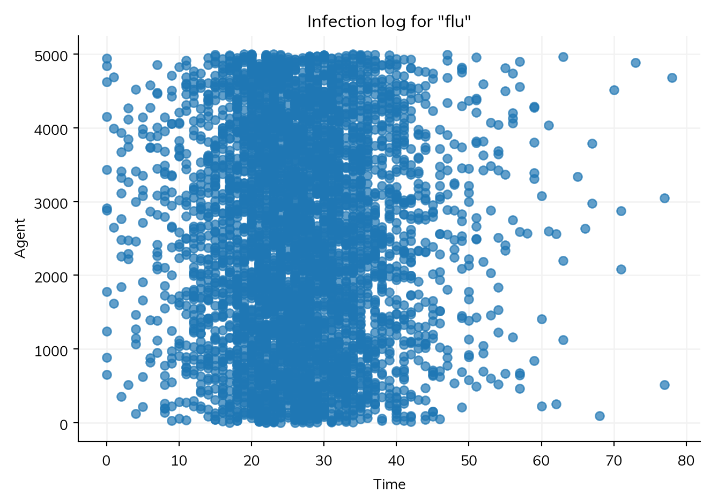

An analyzer records something during a run that the results don’t keep, without changing the model. Most quantities don’t need one: every state and transition of a declared disease has a result, ratios and outcomes are declared with the model (see Results and Outcomes), and results by age or any other group come from stratifying the model. An analyzer is for the rest: something about individual agents (their ages when infected, who infected whom), or a quantity worked out from several modules at once. Besides the infection log in core Starsim, the library has analyzers for costs, DALYs, and cost-effectiveness (on Health economics) and for the CD4 counts of ssl.HIV; all are listed in the appendix.
Writing an analyzer
A function as an analyzer
The simplest analyzer is a function of the sim, given in analyzers=. This one records the mean age of the people infected in each step, in a model of measles in a population with no immunity (an SEIR model with an R0 of about 15). It needs individual ages, so the sim runs as agents:
import numpy as npimport starsim as ssS, E, I, R = ss.states('S E I R')infection = S >> E @1.9*I # β = 1.9 per dayprogression = E >> I @ ss.days(10) # Latent for 10 days on averagerecovery = I >> R @ ss.days(8) # Infectious for 8 days on averagemeasles = ss.Disease(infection, progression, recovery, init_prev=0.001)ages = []defage_at_infection(sim): new = sim.diseases.measles.ti_E.isclose(sim.ti) # People infected during this step ages.append(sim.people.age[new].mean() if new.any() else np.nan)sim = ss.Sim(measles, n_agents=10_000, stop=ss.days(90), analyzers=age_at_infection, verbose=0)sim.run()print('Mean age at infection, each week:', np.round(ages[7::7], 1))
Mean age at infection, each week: [36.8 34. 33.5 33.8 30.5 53.4 nan nan nan nan nan nan]
A function is quick to write, but what it records lives outside the sim: it is not plotted or exported with the results, and when the sim is run in another process (by ss.parallel()), the list in this process stays empty. For anything kept, use a class.
An analyzer as a class
An analyzer written as a class (a subclass of ss.Analyzer) declares results of its own, which are then stored, plotted, and exported with the sim’s other results. This one records the mean age at infection, and the new infections among children and adults, as one result with a column for each:
classAgeAtInfection(ss.Analyzer):""" The mean age of the people infected in each step, and the number of them who are children and adults """definit_results(self):super().init_results()self.define_results( ss.Result('mean_age', label='Mean age at infection', kind='ratio'), # An average (a ratio), so not scaled by the people each agent stands for ss.Result('new_infections', columns=['children', 'adults'], label='New infections'), )defstep(self): new =self.sim.diseases.measles.ti_E.isclose(self.ti)if new.any(): age =self.sim.people.ageself.results.mean_age[self.ti] = age[new].mean()self.results.new_infections[self.ti] = [np.count_nonzero(new & (age <15)), np.count_nonzero(new & (age >=15))]else:self.results.mean_age[self.ti] = np.nan # No infections, so no mean age (rather than 0)sim = ss.Sim(measles, n_agents=10_000, stop=ss.days(90), analyzers=AgeAtInfection(), verbose=0)sim.run()sim.results.ageatinfection.new_infections.plot()

The analyzer’s results are under its name in lower case, sim.results.ageatinfection. A result with columns has each as a result of its own (res.new_infections.children), and each is a column of sim.to_df():
Here the same analyzer compares two versions of the model: the one above, with homogeneous mixing, and one with a contact matrix in which children have the most contacts (the matrix of Population data):
S, E, I, R = ss.states('S E I R')infection = S >> E @0.15*I # β = 0.15 per contactprogression = E >> I @ ss.days(10)recovery = I >> R @ ss.days(8)measles_ages = ss.Disease(infection, progression, recovery, init_prev=0.001, name='measles')contacts = ss.contacts(ages=[0, 15, 65], matrix=[[10, 4, 0.5], [2, 8, 0.5], [1.5, 3, 2]]) # Contacts a daykw =dict(n_agents=10_000, stop=ss.days(90), verbose=0)msim = ss.parallel({'Homogeneous mixing': ss.Sim(measles, analyzers=AgeAtInfection(), **kw),'Contact matrix by age': ss.Sim(measles_ages, networks=contacts, analyzers=AgeAtInfection(), **kw),})msim.plot('ageatinfection.mean_age')

A result that is a count (a flow or a stock) is multiplied by the number of people each agent stands for when the run ends; an average or a fraction (a ratio, as mean_age is given) is not. scale= overrides this.
When an analyzer runs
An analyzer runs at the end of each step, after the step’s results have been recorded. In it, sim.ti (or self.ti in a class) is the index of the step: the stocks there are the state at the step’s start, and the flows the totals over the step, while the people it sees are as they are at the step’s end. A declared disease dates each entry into a state in its state ti_<state>, so the people infected during this step are those with ti_E.isclose(ti) (== raises for a time). A result about the state at the start of a step belongs in record_states() (see Custom modules), and anything to set up before the first step() in init_post().
An analyzer can also be given to a model that runs as compartments, as any module written as code can that keeps nothing for each person. There, it sees the number of people in each compartment (sim.diseases.measles.I.n), and the run goes a step at a time, so it is slower; a quantity that can be worked out from the results after the run is better computed from them.
The infection log
The infection log records each infection: when it happened, who was infected, and, where there is a network, by whom. It needs agents and a contact network, since otherwise nobody is the source of a particular infection: an infection by a mixing pool (ss.MixingPool), a contact matrix, or mixing with everyone comes from the fraction infectious in a group, not from a particular person, so its source and network are NaN (seeds have a source of -1). Give analyzers='infection_log':
S, I, R = ss.states('S I R')flu = ss.Disease(S >> I @0.05*I, I >> R @ ss.days(8), init_prev=0.002, name='flu')sim = ss.Sim(flu, networks=ss.RandomNet(n_contacts=8), n_agents=5_000, stop=ss.days(100), analyzers='infection_log', verbose=0)sim.run()log = sim.analyzers.infection_log.logdf = log.to_df()df.tail()
t
source
target
network
4738
71.0
4104
2082
randomnet
4739
73.0
4185
4882
randomnet
4740
77.0
2155
3045
randomnet
4741
77.0
4104
519
randomnet
4742
78.0
3574
4679
randomnet
Each row is one infection: the time (t), the infected agent (target), the agent who infected them (source), and the network (network). The log also plots who infected whom over time, and log.to_graph() gives the chains of transmission as a NetworkX graph:
sim.analyzers.infection_log.plot()

animate() shows the same infections as they happen; run it in a Python session rather than a notebook:
sim.analyzers.infection_log.animate(framerate=20)
From the log, the generation interval (the time from a person’s infection to the infection of each person they infect) is:
infected_at = df.set_index('target').t # When each agent was infecteddf['generation'] = df.t - df.source.map(infected_at)print('Mean generation interval:', round(df.generation.mean(), 1), 'days')
Mean generation interval: 5.6 days
For a disease with strains, each row also has the strain passed on (strain). A disease written as code can add data to each infection, such as the variant (log.add_entries(uids, sources, time, variant=variants)), or to each agent’s latest infection later on, such as a diagnosis (log.add_data(uids, diagnosed=True)). See Custom modules.
Following agents from step to step
An analyzer can keep a value for each agent, declared with define_states() as a module’s states are, and seeded in init_post(). To follow transmission as the sim runs, it reads the infections of each step from the infection log, disease.infection_log.to_df(ti=self.ti), which needs an ss.infection_log analyzer in the sim. This analyzer counts each step’s new infections in two ways, from the log and from the people who are infected now but were not at the previous time point, and counts how many times each person is infected:
classReinfections(ss.Analyzer):""" New infections each step, from the infection log and from the states, and the number of times each person is infected """def__init__(self, **kwargs):super().__init__(**kwargs)self.define_states( ss.BoolArr('was_infected'), # Infected at the previous time point ss.FloatArr('infections', default=0), # The times each person has been infected )definit_results(self):super().init_results()self.define_results( ss.Result('from_log', label='New infections (from the log)', kind='flow'), ss.Result('from_states', label='Newly infected (from the states)', kind='flow'), )definit_post(self):super().init_post()self.was_infected[:] =self.sim.diseases.sis.I # The people infected at the startdefstep(self): sis =self.sim.diseases.sisifself.ti >0: # At time point 0, the log has the people infected at the start new = sis.infection_log.to_df(ti=self.ti) # The infections of this stepself.infections[ss.uids(new.target.to_numpy(dtype=int))] +=1self.results.from_log[self.ti] =len(new)self.results.from_states[self.ti] = np.count_nonzero(sis.I &~self.was_infected)self.was_infected[:] = sis.IS, I = ss.states('S I')sis = ss.Disease(S >> I @ ss.peryear(2)*I, I >> S @ ss.months(3), init_prev=0.05, name='sis')sim = ss.Sim(sis, networks=ss.RandomNet(n_contacts=4), demographics=True, n_agents=5_000, start=2000, stop=2010, dt=ss.months(1),analyzers=[ss.infection_log(), Reinfections()], verbose=0)sim.run()res = sim.results.reinfectionsprint('Infections, from the log: ', res.from_log.sum())print('Infections, from the states: ', res.from_states.sum())print('Infections, from the results: ', sim.results.sis.infection[1:].sum())print('Mean times infected per person:', round(sim.analyzers.reinfections.infections.mean(), 1))
Infections, from the log: 78327.0
Infections, from the states: 54781.0
Infections, from the results: 78327.0
Mean times infected per person: 13.6
The states miss infections, since an agent can recover and be infected again within one step. Get flows from the results of the transitions (sim.results.sis.infection; see Results), or from the infection log, rather than from differences of states between steps.
An array of values for each agent also has slots that are not people (the dead, and room for people born later), which hold NaN in an ss.FloatArr. So sum or average over the array itself, or .values (the people alive), not .raw, the array underneath:
An analyzer must not change the model. To change something during a run, use an intervention.
Results kept outside the sim are lost when the sim runs in another process (ss.parallel()); declare results in a class.
Counts of agents are scaled; averages are not. A result’s kind decides this: a flow or stock is scaled, a ratio is not. kind= is required unless the name says it (new_..., n_..., cum_..., prevalence).
Check whether a result already exists. Stratifying the model gives results by age or any other group, under every solver, with no analyzer.
The analyzers in Starsim and its library, with the first line of each one’s documentation (see the API reference, Analyzers, Economics, and Diseases in the library):
import inspectimport starsim.library as ssldefsubclasses(cls):""" Every subclass of a class, and every subclass of those """for sub in cls.__subclasses__():yield subyieldfromsubclasses(sub)for sub insubclasses(ss.Analyzer):if sub.__module__.startswith('starsim'): # Not those defined on this page prefix ='ssl'if sub.__module__.startswith('starsim.library') else'ss'print(f'{prefix}.{sub.__name__}: {inspect.getdoc(sub).splitlines()[0]}')
ss.infection_log: Log who infected whom -- see `ss.diseases.InfectionLog` for detail
ssl.CD4_analyzer: Record the CD4 count of every agent at every timestep.
ssl.Costs: The costs of a sim, from its results, with their total
ssl.DALYs: The disability-adjusted life years of a sim: the years lived with disability, plus the years of life lost
ssl.ICER: Compare the costs and effects of scenarios: incremental cost-effectiveness ratios
The infection log is given by name (analyzers='infection_log'), or as ss.infection_log(). Its log, sim.analyzers.infection_log.log, has to_df() (a row per infection, with the columns t, target, source, and network, and strain for a disease with strains; to_df(ti=...) for those of one step), to_graph() (a NetworkX graph of who infected whom), and add_entries() and add_data() (for diseases written as code); the analyzer has plot() and animate().